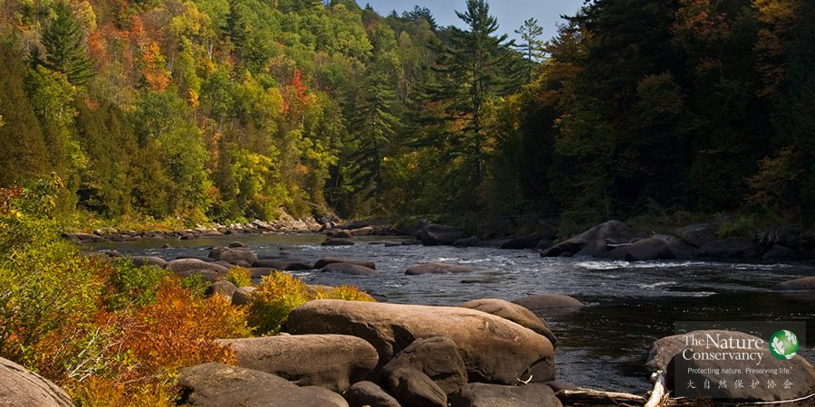

概述
滇西北®董磊
生态系统的服务功能指的是人们从自然中获得的收益。自然提供给我们食物、干净的饮用水、吸收人类活动产生的二氧化碳、保持水土以维护我们家园的安全；同时，神秘莫测的自然景色又给了我们享受和探索的空间，无数的文人墨客感慨于自然的壮丽，留下了宝贵的文学著作。然而，这些生态系统为人类提供的服务经常被人们所忽视，目前，随着人口数量的不断增长以及对自然资源需求的不断增加，自然的价值正在日益凸显。无论现在还是未来，人类仍需依赖生态系统来满足自身的多种需求。我们将向您重点介绍TNC保护生态系统的相关工作。
千年生态系统评估（The Millennium Ecosystem Assessment ，MA）集合了世界各地的多位专家，从文化、物质、精神、社会等多个层面详细论述了自然对于人类的重要性。在MA评估结果出版前，已经有大量的研究和报告问世，这些报告都分析评估了以生态系统服务为立足点的保护方法的优缺点。但是只有MA的报告使得生态保护界人士重新审视了他们在项目上使用的保护方法，从而进一步明确了人与自然的关系。
全新的保护原则从这里衍生了出来，这一原则不仅体现在研究领域，而且体现在相关应用中，例如支付体系、市场机制、关于保护的最佳措施和效率的理论思辨。生态系统服务功能这一理念正在逐步填平生态保护与经济发展之间的鸿沟。
生态系统功能普及教育
滇西北®董磊
TNC的宣传团队开展了一项调查，这项调查研究了“生态系统的服务功能”这一概念对于不同人群的含义以及人们对于“自然对于人类生活有价值”这一观点的反应。调查结果既让人充满希望，又很能反映现存问题。大多数人都可以接受“自然对于人类生活有价值”的观点，但是对于同一人群中的大多数人来说，把这些价值称为“生态系统的服务功能”，则产生不了任何意义。
下面的文字可以帮助您了解为什么要开展普及生态系统功能的教育，以及什么样的方式最有助于这一理念的推广。
为什么我们需要普及“生态系统的服务功能”这一概念？
“生态系统的服务功能”能帮助我们更好地理解生态保护如何为人类的生存发展提供支持，也能帮助我们更深刻地理解自然对于人类的重要性。这个理念使用了一种我们大多数人闻所未闻的方式，将所有人和自然界直接联系了起来。对于大多数人来说，这是一个全新的概念，而且因为理解这一概念需要强大的科学背景支持，所以希望大众在短期内迅速接受这一理念还十分困难。
我们宣传“生态系统的服务功能”，必须通过这样的方式，即，帮助人们意识到生态系统对于他们的生活十分重要，人们必须认识到这一理念可能比他们自己的工作、孩子、人生目标都更重要。专业术语，或者我们这些生态系统功能专家觉得“通俗易懂”的语言都可能使普通人失去兴趣或者一头雾水。他们不会听你继续讲下去。但生态保护工作者们通常又不知道用什么样的词汇和语言能够激起听众的共鸣，因此我们需要做研究，尤其是通过公众调查的方式，来找到最合适的传播方式。
如何讨论生态系统功能？
在生态系统功能这方面，我们既进行了特定小组（小组访谈）调查，也进行了全国（美国）范围内的调查，以了解人们如何定义自己在自然界中的角色，以及大家认为自然保护对社会生活、人类生活和经济发展产生了哪些价值。我们从过去的研究中得知，公众对于土地保护、清洁水源与人们生活的联系有着清晰的认识，他们已经了解了自然提供的这些服务。通过调查，我们希望测试公众对于这些生态系统功能的了解程度究竟有多深，大家是否能够了解生态系统提供的全部服务——从最基础的食物和清洁的水到更高层次的旅游业和工作机会。同时，我们也希望了解公众除了直观的金钱价值外，对于“价值”这一概念有着怎样不同的定义。
根据调研的结果，我们开发出了一种名为“信息三角”的工具。这一“信息三角”就像考试作弊的小抄纸一样，帮你记住重要的信息，其后你需要做的就是让自己的普及教育集中在几个重点上，而不是一层一层的罗列论据。“信息三角”能够帮助你的陈述始终充满说服力，并确保你的观点对受众的重要性，它还能够帮助你重复相关论点，使你的观点从生活中的各种琐事中凸显出来，对受众产生更大的影响。你还可以加一些有特色的细节，通过个人的故事来增加内容，制作属于自己的“信息三角”。
自然资本（Natural Capital）
北美®TNC
自然资本项目是斯坦福大学伍兹环境研究所、明尼苏达大学环境研究所、TNC和世界自然基金会（WWF）共同创立的项目。项目的目标是让重要研究机构的领导者参与其中，将世界级的研究成果与具有影响力的实地保护项目联系起来。为实现目标，自然资本项目正在开发相关工具来量化自然作为资本的价值，并积极推进使用这些工具，以便决策者可以将对于自然资本的科学和经济理解整合进决策过程。
获取更多信息请访问这里。
自然的价值
雨崩小熊猫®徐健
TNC正在邀请更多的力量参与到评估自然价值的研究工作中，通过这些研究，我们不仅可以继续获得人类生活必备的基本资源，食物、饮用水、健康的土地，而且还能更有效地降低洪水、风暴对我们生活的影响。
TNC使用最前沿的科学分析方法来探索自然的价值，同时我们与企业和政府决策层积极沟通，使这些研究成果可以在政商两届的决策过程中发挥作用。TNC在全球各地的保护项目也将受益于这些研究成果，帮助自然和人类更好地生存发展。目前TNC已经在以下的项目中应用了自然价值的研究成果。
运用“水基金”支持林火管理
研究湿地的生态服务功能
在非洲进行森林和流域管理
从农业生产的角度进行水资源保护
完成编写“水基金”最高版本指导手册
获取更多信息，请访问这里。
运用水基金支持野火管理

南美®TNC
由有经验的专家对林火进行控制和管理，不仅可以使森林保持健康，而且可以减少自然状态下林火成灾的风险。TNC资深政策顾问劳拉•麦卡西（Laura McCarthy）和圣达菲水力组织（the Santa Fe water utility）合作，设立水基金，用从居民中募得的资金，支持正在进行的森林生态恢复工作，如森林间伐培育和制订林火控制与计划等。
十多年前，西部的水源管理专家注意到新墨西哥州美特尔（the Cerro Grande）山火曾造成过巨大的破坏。大火整整燃烧了两个星期，摧毁了人类的家园，切断了洛斯阿拉莫斯城（Los Alamos）的水源供应，对城市供水系统造成了高达一千七百万美元的损失。由于使用危险的燃料，以及多年来人为地抑制林火导致的森林退化，像许多大型火灾一样，这次森林火灾给人们造成了沉重的打击。
在美国的新墨西哥州，圣达菲森林（Santa Fe National Forest）环绕着阿拉莫斯城（Los Alamos）的两座主要水库。一项针对这一森林的调查显示，在近100年内，当地没有出现过一次自然火灾。在历史上，自然火灾的发生频率大约为每七年一次。没有自然火灾定期清除幼树，当地森林中的美国黄松已经严重过度生长。这一现象造成的火灾风险促使该城和美国林业局开展了一项为期10年的森林间伐培育项目。目前，水基金会帮助林业局进行定点林火管理以维持自然的林木密度，以此来减少灾难性火灾的发生。
获取更多信息，请访问这里。
通过农业实践进行淡水保护
浙江茶农®TNC
自然对于全球各地的人们都有着无穷的价值——从防洪到生产食物再到保障经济安全等等。农田的健康取决于土地的质量和可利用淡水的数量及质量。在美国佐治亚州弗林特河下游盆地（Lower Flint Basin），那里的农业消耗了大量的水。与当地农民合作对于佐治亚州的水源保护工作至关重要。十多年来，TNC一直与当地农民，大学研究院和保护机构合作，构建了强有力的合作伙伴关系，希望将创新水源的保护方式由实验室应用到农田间。
新的灌溉和耕种方式可以被归为三类：
1.改进设备——在灌溉系统安装新型喷嘴，这些喷嘴可以将水像雨一样喷洒到土地中，这样水滴落得离土地更近，而且水压减小，有效减少了因蒸发及风力而造成的水量损耗。在田地边缘喷水的强有力的“尾枪”被装上了控制器，使水不会再喷溅到道路等没有植被的地区。
2.技术创新——田地里经常会有一些没有生长作物的区域，如岩石和湿地，但是大多数的灌溉系统会不加区分地将水喷洒到整片田野。区别灌溉系统（Variable rate irrigation 简称VRI）使得农民能够通过以GPS导航为基础的软件升级灌溉模式，将没有作物的地区从灌溉系统中移除。此外，田野中的感应器将收集像温度和土壤湿度等数据。农民可以通过电脑和智能手机查看这些信息，并实时对灌溉计划进行修正，节约用水，并减少十分耗时的田地劳作。
3.耕种方式——种植作物的种类和种植期限都对水源使用有重要影响。比如，将植物残茬留在田中可以改善根系结构和土壤的蓄水能力。另外，农民通常每年轮种作物，以保持土地健康。研究显示，在轮作中增加特定的植物如暖季型多年生禾草可以逐步改善土壤，土地会变得更加高产，庄稼的需水量也会减少。
将这三种方法结合到一起会产生令人难以置信的效果——在降水较少的一年里可以预计减少150亿加仑用水量。
获取更多信息，请访问这里。
移除大坝的优势
北美®TNC
人类和动物都依赖着自然界中自由流淌的河流。以缅因州佩诺布斯科特河（Penobscot River）为例，河流生态恢复的重点是关注整条河的盆地及它的生态作用——从鱼类捕捞到漂流、垂钓，再到水力发电。在大坝修建前，鲑鱼曾是这条河流的主要鱼类，如今，迁徙鱼类如鲟鱼、花条鲈，特别是河鲱的数量都在减少。
现在，佩诺布斯科特河合作保护计划是使濒危的大西洋鲑鱼和其他鱼类重回河流的最好方式。河流重建计划的合作伙伴初看起来似乎不可思议：一家电力公司、一个美洲原住民部落、六家环保组织和无数的州立、联邦机构还有河流沿岸社区，实际上所有这些合作伙伴都与保护计划密切相关。这一计划需要拆除两处离海洋最近的大坝。同时，河流上游的第三座大坝也将退出使用，一条精心设计的鱼类通路将会修建在这座大坝周围。与此同时，其他大坝将会增加产能，从而在保持现有水力发电水平的基础上实现生态保护。
获取更多信息请访问这里。
湿地提供的生态服务功能
黑翅长脚鹬®TNC
作为保护专家，我们清楚地知道自然资源的内在价值，以及保护土地和水源的原因，这些原因并不应局限于自然可以为人类的生存和发展提供保障。然而，目前关于如何使用土地和水源的决策大部分仍然是基于这种方案给人类带来的好处，随着自然资源日益稀缺，我们最重要的自然生态区也面临着极大的风险——被转化为开发用地。所以我们必须找到最强有力的论据，以说服人们保护自然土地，并重视它们为人类和自然本身提供的种种服务。
达克-彭索基流域保护方案（Duck-Pensaukee Watershed Approach）是TNC、环境法研究所（ELI）和一系列重要机构及NGO合作伙伴共同开发的方案。根据美国北部五大湖沿岸流域湿地对于人类及野生动物的不同价值，它对湿地进行了排序。这个方案的目标是利用这些信息使湿地保护伙伴的工作更有针对性，将更多的保护力量优先投入到能够被保护或被重建的名单里面——这些优先地区具有完善的生态功能，将可以保证水系长期的健康。这一方法在洁净水源法案（the Clean Water Act）之下可以达成双重目标：提升缓解水污染的成功率，同时将募集来的减少污染的资金（最近根据ELI估算，在全美范围内每年用于减少污染的资金可达三十亿美元）引导到投资流域保护项目上。
为什么要关注湿地？因为湿地具有一系列的生态服务功能，这些功能通常远远超过环绕湿地的高地所提供的功能。同样以一英亩计算，湿地对于美国经济的价值据估测是它的邻居——高地森林价值的十倍——湿地每英亩每年可产生一万美金的经济价值，而高地每年仅有一千美金（英格拉哈姆和福斯特2008，Ingraham and Foster 2008）。虽然湿地仅是提供多种生态服务功能的大型栖息地的一部分，但人类社会仍然可以从湿地保护中获得很多收益。
达克-彭索基流域保护方案包括四个以GIS为基础的工具，涵盖了发现湿地保护目标的方法。
1.甄选最适合保护的湿地。我们将现有和历史上的湿地和土壤数据进行了比较，并结合现有土地使用数据进行分析，以甄选出最急需保护的湿地。
2.将为陆地保护地制定的保护计划应用到湿地保护中。为了明确保护工作的重点地区和重点生态功能，我们评估了从19世纪以来，水域覆盖区的四项生态功能（水质量的改善、洪水控制、表面水体补给和固碳）。
3.评估每个湿地个体为人类提供不同生态服务的潜力。我们将确定特定地区为人类提供生态服务的潜力，包括水质量改善、洪水控制、表面水体补给和碳储存，海岸线保护及鱼类栖息地评估。
4.评估地区对野生动物的重要性。这一步骤所采用的“野生动物工具”（“Wildlife Tool”）具有独创性，它为威斯康星州野生动物行动计划量身定做了与其配套的湿地保护工作，展现出高地与湿地之间的重要联系，将当地和全州范围内对野生动物保护具有重要意义的地区都标注在了地图上。
利用这些工具，我们绘制了一系列湿地地图，并通过报告及在线互动地图工具的方式与公众分享。它们使用户可以将保护目标与湿地需求相结合（湿地需求指湿地丧失的生态功能），发现最有可能实现这些目标的地点，并选择特点地区来保护或重建。被选择的地点可能有潜力实现一个、多个或者所有的生态系统功能。举例来说，使用这一方法，在易发洪水的地区的城市规划者可以确定上游地区最有可能减少洪水威胁的地区。此外，可以找出湿地退化地区，从整个湿地的大范围来解决生态系统功能减弱的问题。我们正在通过联系湿地利益相关者、沟通重要合作者的方式来推广这一方案。
我们希望将这些结果应用到达克-彭索基流域的保护上，继续改进方法，并将这一方案推广到其他水域的保护中。下一步的发展计划将包括整合其他湿地保护计划和目标（例如测试水体污染物最大日负荷总量），制定相关步骤以确保这一保护方案能够适应气候变化，使保护成效更稳定，同时，将方案的生态保护成果估算成生态服务的经济价值。
获取更多信息，请访问这里。
森林和流域管理

北美®TNC
肯尼亚的森林覆盖率在不到100年的时间里已经从20%下降到2.4%，因为人们对于木材燃料、煤炭、建筑材料和耕地的旺盛需求，剩下的森林也处在日益严重的威胁中。
肯尼亚绿带运动（Greenbelt Movement）的旺加里·马塔伊（Wangari Maathai）在很早之前就认识到了这一点。TNC的亚当·惠尔彻尔（Adam Whelchel）和绿带运动合作，将植树和提升社区环保能力作为优先工作，并着重在经济收益最高的地区进行森林恢复。
获取更多信息，请访问这里。